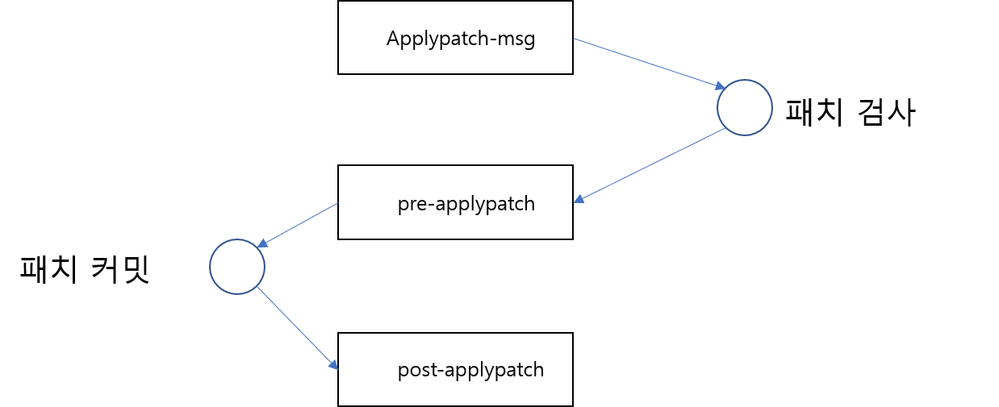

서버측 저장소에서 동작하는 훅을 말합니다. 서버 훅은 깃 원격 저장소를 관리하는 시스템 관리자에게 보다 적합한 스크립트들입니다.

pre-receive, update, post-receive 스크립트는 서버에서 실행되는 역할로 원격 저장소의 .git/hooks 폴더 안에 있어야 합니다.
원격 저장소가 푸시를 받게 되면 pre-receive 스크립트가 실행됩니다. 이를 통하여 권한을 설정하거나 푸시된 내용을 확인할 때 유용합니다.
pre-receive 훅은 업데이트되는 모든 refs의 목록을 전달받습니다. 서버는 푸시된 refs의 목록을 인자값으로 받습니다. 반환값을 통하여 refs를 거절할 수도 있습니다. 그리고 pre-receive 후크는 update 후크로 대신 사용할 수도 있습니다.
Update 스크립트는 각 브랜치마다 한 번 실행됩니다. 여러 개의 브랜치를 동시에 푸시할 때 pre-receive 스크립트는 한 번만 실행되는 것과 달리 update는 각 브랜치마다 실행됩니다.
Update 훅을 이용하여 브랜치의 권한을 설정하는 등의 설정을 할 수도 있습니다. Update 훅은 서버의 동작 처리 정책을 구현할 때 많이 사용됩니다. 모든 브랜치가 푸시될 때마다 실행되기 때문입니다.
이 스크립트는 몇 개의 값을 인자값으로 전달받습니다. 브랜치 이름 원래 브랜치 refs 푸시된 refs
SSH를 이용하는 경우 푸시한 사람도 같이 알 수 있습니다.
푸시가 완료된 후에 실행되는 스크립트입니다. Post-receive 스크립트를 통하여 푸시 이후의 작업들을 연결하여 실행할 수 있습니다. 예를 들어 메일링, CI 등의 작업을 추가로 할 수 있습니다.
이 스크립트가 실행되고 있는 동안에는 푸시 연결은 유지됩니다. 부하가 있는 스크립트를 실행하는 경우에는 푸시 동작이 길어질 수 있습니다.
이 훅은 깃에서 잘 사용되지 않습니다. 이 훅 대신 post-receive 훅으로 대체하여 사용하는 경우가 일반적입니다.